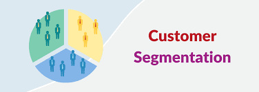
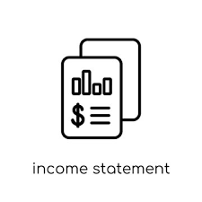

Every segment (Silver, Gold, Platinum, Diamond) represents a classification for a customer based on their Sales computed over one year. You can see how many customers belong to each segment over time.
You can also analyze how single customer change status over time and details about customers belonging to the same segment.
The clustering is dynamic, so that the categorization considers the filters active in the report.

This is a dynamic Income Statement. With the filter TopN you can dynamically analyze the income statement and see the best products based on Sales and also an additional row that accumulates the “other” brands.

This analysis helps understanding how many customers in a period are new, returning, lost, or recovered. The configuration is dynamic so it changes based on report filters.
There is also the option "drillthrough" that allow to see details of the customer that in a period are classified as New or Lost.